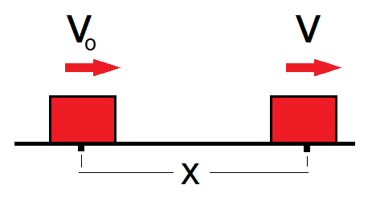

Bir boyutta hareket, bir cismin sadece düz bir çizgi üzerinde (doğrusal) ileri-geri veya yukarı-aşağı yer değiştirmesini ifade eder. Bu hareket, konum, hız, ivme ve zaman kavramlarıyla incelenir; en temel türleri sabit hızlı veya sabit ivmeli hareketlerdir.
